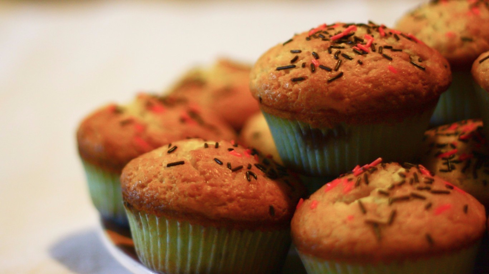

Choc-centre cupcakes
INGREDIENTS:
120g almond meal
75g (1/2 cup) plain flour
50g (1/2 cup) dark cocoa powder
2 teaspoons baking powder
140g (1/2 cup) Nutella
80g butter, melted
2 teaspoons vanilla extract
2 eggs
125ml (1/2 cup) buttermilk
60ml (/4 cup) maple syrup
12 Lindt Lindor Sea Salt Caramel balls
50g NESTLÉ BAKERS' CHOICE Dark Chocolate CHUNKS, melted, cooled
FROSTING:
125g butter, at room temperature
155g (3/4 cup firmly packed) dark brown sugar
1. Step 1 Preheat the oven to 180C/160C fan forced. Line twelve 80ml (1/3 cup) muffin pans with paper cases.
2. Step 2 Combine the almond meal, flour, cocoa powder, baking powder, Nutella, butter, vanilla, eggs, buttermilk and maple syrup in a food processor. Process, scraping down the sides halfway, for 20-30 seconds or until the mixture is just smooth. Divide mixture among prepared pans. Bake for 20 minutes or until just firm to the touch. Set aside to cool completely in the pan.
3. Step 3 Use a small sharp knife to cut a small cone-shaped piece from the top of each cake, leaving a 1cm-wide border. Reserve the cone. Insert a Lindor ball into hole. Trim the pointed end of cone and insert the top over the Lindor ball to sit flat.
4. Step 4 For the frosting, use electric beaters to beat the butter and sugar in a bowl until pale and creamy. Spoon into a piping bag fitted with a 1cm nozzle.
5. Step 5 Pipe the frosting onto the cakes, covering the cut marks on the top, and drizzle with the melted chocolate.
Pumpkin and walnut cupcakes
Ingredients
2 eggs
60ml (1/4 cup) milk
100g (1/2 cup) brown sugar, firmly packed or rapadura sugar
125ml (1/2 cup) extra virgin olive oil (or walnut oil)
125g (1 cup) pumpkin, coarsely grated
55g (1/2 cup) almond meal
45g (1/3 cup) walnuts, chopped (optional)
160g (1 cup) wholemeal self-raising flour
1/2 teaspoon ground cinnamon, or ground cardamom, or a mixture of both
1/2 teaspoon ground cinnamon, or ground cardamom, or a mixture of both
Lemon cream cheese icing
150g cream cheese, at room temperature
60g (1/3 cup) icing sugar, sifted
2-4 teaspoons lemon juice1. Step 1 Preheat the oven to 180C/160C fan forced. Line twelve 80ml (1/3 cup) muffin pans with paper cases.
2. Step 2 Whisk together the eggs, milk, sugar and oil in a large bowl. Stir in the grated pumpkin, almond meal and chopped walnuts, if using. Add the wholemeal flour and spice and stir until just combined.
3. Step 3 Divide the mixture among the prepared pans and bake for 20 minutes or until a skewer inserted in the centre comes out clean. Set aside for 5 minutes, then transfer to a wire rack to cool completely.
4. Step 4 For the icing, use electric beaters to beat the cream cheese, icing sugar and 2 tsp of the lemon juice in a bowl until well combined and smooth. Add the remaining lemon juice until smooth and to taste.
5. Step 5 Use a piping bag fitted with a 1cm plain piping nozzle to pipe icing over the cupcakes. Sprinkle with zest.
Lemon coconut cheesecake cupcakes
Ingredients:
250g block cream cheese, softened
2 teaspoons finely grated lemon rind
2 tablespoons caster sugar
250g packet Butternut Snap Cookies
1/3 cup desiccated coconut
80g butter, melted, cooled
3/4 cup self-raising flour
1/4 cup caster sugar, extra
1/4 cup milk
1 egg, lightly beaten
1 teaspoon vanilla extract
50g butter, melted, cooled, extra
Frosting
60g butter, softened
1 1/2 cups icing sugar mixture
1 teaspoon lemon juice
1. Step 1 Grease 8 holes of a 12-hole, 1/3-cup-capacity muffin pan. Line base and side of each greased hole, crossways, with two 1cm x 15cm strips of baking paper.
2. Step 2 Using an electric mixer, beat cream cheese, lemon rind and sugar until light and fluffy. Refrigerate for 30 minutes or until firm.
3. Step 3 Meanwhile, using a food processor, process cookies and coconut until fine crumbs. Add butter. Process until combined. Divide mixture evenly among prepared holes. Using the back of a teaspoon, press mixture over base and up the side of each hole. Refrigerate for 10 minutes.
4. Step 4 Preheat oven to 180C/160C fan-forced.
5. Step 5 Using 2 teaspoons of cheese mixture at a time, roll into 8 balls and place on a plate. Reserve remaining mixture for frosting. Combine flour and extra sugar in a bowl. Make a well. Add milk, egg, vanilla and extra melted butter. Stir to combine. Spoon 1 level tablespoon batter into each prepared crust. Top each with 1 cream cheese ball, gently pushing into batter. Top with 1 level tablespoon batter, gently spreading to cover.
6. Step 6 Bake for 18 minutes or until light golden and just firm to touch. Cool in pan.
7. Step 7 Make Frosting: Using an electric mixer, beat reserved cream cheese mixture and butter until light and fluffy. Gradually beat in icing sugar, 2 tablespoons at a time, until combined. Stir in lemon juice. Spoon frosting into a piping bag fitted with a 1cm fluted nozzle. Pipe onto cupcakes. Serve.
Double-chocolate cupcakes
Ingredients:
1 cup (250ml) thickened cream
450g good-quality dark chocolate
5 eggs
3/4 cup (165g) caster sugar
1 cup (150g) plain flour
1 tablespoon NESTLÉ BAKERS' CHOICE Cocoa
1/2 teaspoon baking powder
Chocolate sauce
100g dark chocolate, broken into pieces
1/3 cup (80ml) thin cream
1. Step 1 Preheat the oven to 180°C (160°C fan-forced). Line an 18-hole patty pan with paper cases.
2. Step 2 Stir cream and chocolate in a pan over low heat until smooth. Cool slightly.
3. Step 3 Place eggs and sugar in bowl of an electric mixer, and beat on high until pale and doubled in volume. Slowly beat in chocolate mixture.
4. Step 4 Sift in flour, cocoa and baking powder, then stir with a metal spoon to combine.
5. Step 5 Divide mixture among cases. Bake for 15-20 minutes until a skewer inserted into the centre comes out clean. Cool slightly in pans, then remove cakes from cases.
6. Step 6 Meanwhile, for sauce, place ingredients in a heatproof bowl over a pan of simmering water (don't let bowl touch water). Stir until chocolate has melted.
7. Step 7 Remove from heat and stir until smooth.
8. Step 8 Cool slightly. Serve cakes topped with sauce. Decorate with flowers if using.
Rocky road cupcakes
Ingredients:
1 quantity Basic cupcakes (see related recipe)
250g packet raspberry and vanilla marshmallows, quartered
1/2 cup diced almonds
1/2 cup desiccated coconut
500g milk chocolate, melted
1. Step 1 Preheat oven to 180°C/160°C fan-forced oven. Line two 12-hole, 1/3 cup-capacity muffin pans with paper cases. Make Basic cupcakes (see related recipe).
2. Step 2 Combine marshmallows, almonds and coconut in a bowl. Add chocolate. Mix to combine. Spoon mixture onto cakes. Stand at room temperature to set. Serve warm.